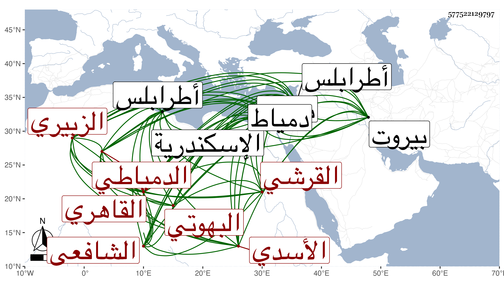

0902Sakhawi.DawLamic.ITO20230111-ara1.EIS1600.577522129797
Biography ID: 577522129797
724
خليل بن إبراهيم بن عبد الرحمن بن إبراهيم بن علي بن موسى الغرس أبو الجود بن البرهان بن الزين الزبيري القرشي الأسدي البهوتي الأصل الدمياطي القاهري الشافعي ويعرف قديما بالمنهاجي والقرشي ثم الآن بإمام منصور وموسى جده الأعلى مدفون عند الشيخ أبي الفتح الواسطي باسكندرية وابنه علي كان ذا ثروة من بهائم وأراض وغير ذلك فتجرد وانقطع إلى الله في بهوت منفردا بها حتى مات حسبما أخبرني بذلك صاحب الترجمة وانه ولد في سنة ست وثلاثين وثمانمائة تقريبا بدمياط ونشأ بها فقرأ على الفقيه موسى البهوتي والد عبد السلام وعبد الرحمن وحفظ عقيدتي الاسلام للغزالي واليافعي والعمدة وأربعي النووي والشاطبية والرائية ومقدمة في التجويد لابن الجزري وكذا للخرفاني وألفية الحديث والمنهاج الفرعي والفصول لابن المجدي وألفية النحو مع الملحة وشرحها لمؤلفها وقواعد ابن هشام وتصريف الزنجاني ورسالة الميقات للجمال المارداني والجداول الزينية في الميقات وبديعية شعبان الآثاري وعرض ذلك على علي ابن محمد الهيثمي ثم الطبناوي مع أخذ الميقات عنه والتقويم وجداول الأهلة بقراءته بل وجميع صحيح مسلم من نسخة كتبها بخطه ، وكتب له إجازة بكل ذلك أرجوزة دون خمسين بيتا رأيتها ، ووقفت بخط صاحب الترجمة على أشياء كرباعيات النسائي وألفية ابن مالك وإيساغوجي ورسالة ابن أيوب في الطب بل قرأ على شيخنا حديثين من أول البخاري وحديثا من أول الشفا بعد سماعه من لفظ المسمع للمسلسل بشرطه ولسنده بالكتابين بقراءة غيره وذلك في سادس ربيع الثاني سنة إحدى وخمسين وكتبت أنا له بذلك ثبتا وصححه شيخنا وفي تاريخه أيضا على الزين رضوان المستملي البعض من الكتابين المذكورين بعد سماعه للمسلسل أيضا من لفظه وأجاز له وأثبت ذلك بخطه وقرأ رباعيات النسائي على كل من النجم محمد بن أحمد بن عبد الله القلقشندي والشرف يحيى العلمي المالكي وجود القرآن على الشمس العطائي إمام المعينية الآتي وأخذ في الفقه عن البوتيجي بل قرأ عليه الاذكار ، وقرأ في الفقه أيضا على النور بن القزيط المحلي محلة أبي علي الغربية من السنهورية بها وعرض عليه عقيدة الغزالي من إحيائه في شعبان سنة تسع وخمسين ووصفه بالعدل الرضي الفاضل المحصل العالم العامل وأخذ المنهاج تقسيما كان أحد القراء فيه عن الجلال البكري وفرائضه خاصة عن البدر حسن الأعرج والنحو وأصول الفقه عن الشهاب أحمد بن عبادة المالكي وكذا النحو والمنطق عن السيد الحنفي نزيل الجوهرية وفي النحو فقط عن الزين قاسم النحوي ويحيى العلمي المالكي وآخرين وفي الأصول فقط عن العلاء الحصني وفي الصرف عن التقي الحصني والميقات عن حسن الصفدي والطتاوي وعليهما قرأ في التصوف وكذا على عمر الحصني وعلم الدين الاسعردي بل قرأ على أولهما صيانة الانسان من أذى النبات والمعدن والحيوان لابن أيوب القادري في دفع السموم وعلى ثانيهما منظومة له في العقائد في سنة إحدى وستين وأجاز له اقراءهما وجميع تصانيفه والأول بطريقتي القادري والعجمي وحضر دروس العبادي وآخرين ، وسافر إلى طرابلس وبيروت في البحر وإلى غيرهما واختص بمنصور بن صفي وقتا وسماه امامه وجوهر المعيني وآخرين ثم ترقى لأمير المؤمنين المتوكل على الله العز عبد العزيز . ودخل في أشياء كالوصية على بني أبي الفضل بن أسد ويذكر بهمة وغيرها ، وقد سمع مني أشياء كالمسلسل ، وأخذ عني مؤلفي في مناقب العباس ولا بأس بفهمه .
